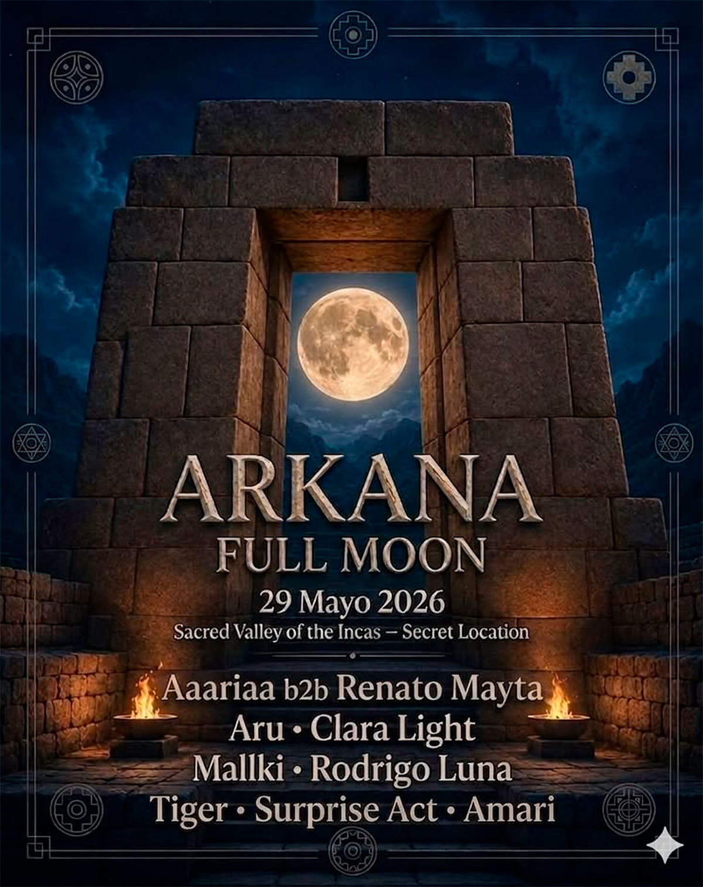

ARKANA FULL MOON
fecha: 29/05/26 hora: 7pm
lugar: Secret Location,
Valle Sagrado de los Incas


Arkana Full Moon 🌕
Bajo la luna llena, nos volvemos a encontrar en el Valle Sagrado para compartir una noche de música, conexión y celebración.
La experiencia comenzará desde las 7 p.m. con un Pagapu oficiado por Toribio de Q’eros, abriendo el espacio alrededor del fuego para una primera parte enfocada en el ecstatic dance y sonidos como downtempo, organic house, indie dance y otras atmósferas envolventes.
A partir de las 11 p.m., la energía de la noche tomará otro rumbo con un viaje musical que recorrerá distintos paisajes sonoros: desde house y progressive house hasta techno, minimal, psy techno, dark progressive y forest.
Una celebración bajo la luna llena, en medio de las montañas, donde la música y el encuentro vuelven a guiarnos una vez más.
Si estuviste en el festival, ya sabes lo que se viene.
Arkana Family ✨
LINE-UP:
Aaariaa
B2B
Renato Mayta
Aru
Clara Light
Mallki
Rodrigo Luna
Tiger
Amari